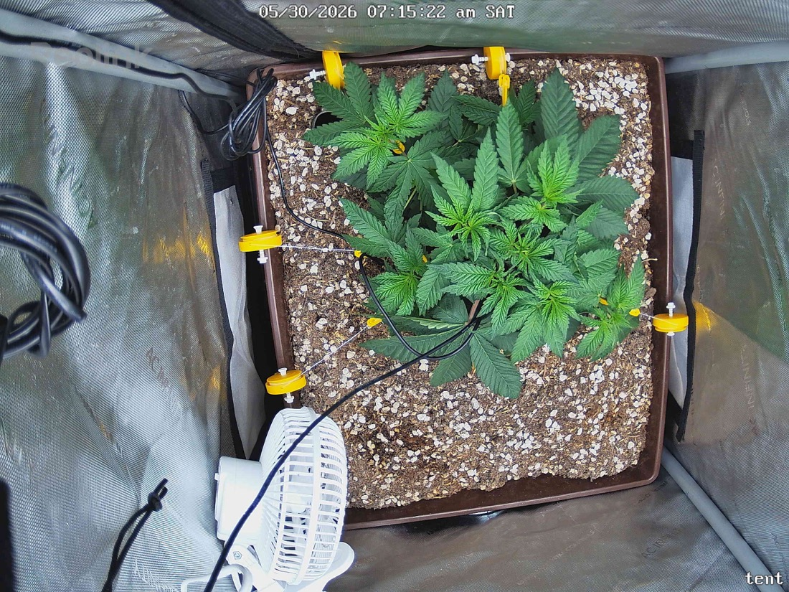

← All reports
May 30, 2026
Sat May 30, 2026 — 7:15 AM

Prognosis
Daily prognosis — Day ~32 from germ, ~25 in tent
- Canopy spread: LST is doing its job — between yesterday afternoon and this morning the side branches are clearly more horizontal, opening a flatter, wider canopy and exposing inner nodes to light. Good response, no snapped stems visible.
- Color & posture: Leaves remain deep, uniform green with flat blades (no taco, no praying, no claw). Slight upward orientation on the newest growth at center = healthy phototropic response, not stress.
- Structure: Multiple secondary tops developing nicely from the topping on 5/23. Internodes look tight — no stretching at 400 PPFD with 18/6.
- No stress signs: No tip burn, no interveinal chlorosis, no edge crisp, no spots/webbing, no powdery mildew. Soil surface looks appropriately dry on top (good — last water 5/28, on track for next around 6/1–6/2).
- Phase check: Right on schedule. ~3.5 weeks in tent, topped + LST started, building a manifold-style canopy. This is textbook late-veg.
Light intensity bump
- You cleared the plant to push to 380–400 already and it's parked at 400 with zero stress. Bump to 500–550 PPFD now, then re-evaluate in 48h. Once you flip to flower, target 700–900 PPFD over the first two weeks.
Flip timing for an early-August chop
Papaya Crush is ~8–9 weeks flower. Working backward from August 7 harvest:
- ~7 days dry/cure buffer → chop ~Aug 7
- 9 weeks flower → flip ~June 5
- Plants typically 2–3x in size during stretch (weeks 1–3 of flower). Your tent is 2x2 and the canopy is already filling ~60–70% of the tray.
Recommendation: flip to 12/12 on or about June 3–5 (roughly 4–6 more days of veg). Any longer and stretch will jam you into the SF-2000. Keep LST aggressive through the stretch to manage height.
Next actions
- Raise light to ~500 PPFD today.
- Continue LST daily; tuck/tie any branch that races vertical during stretch.
- Water around 6/1–6/2 (check by lifting pot / finger 1" down).
- Plan flip to 12/12 June 4 (gives ~9.5 weeks flower → comfortable Aug 7 chop window).
- Start thinking about a bloom top-dress or compost tea at flip if you haven't already (living soil).
Overall: Healthy, vigorous, on-track late-veg plant responding well to topping + LST — push light, flip in ~5 days.